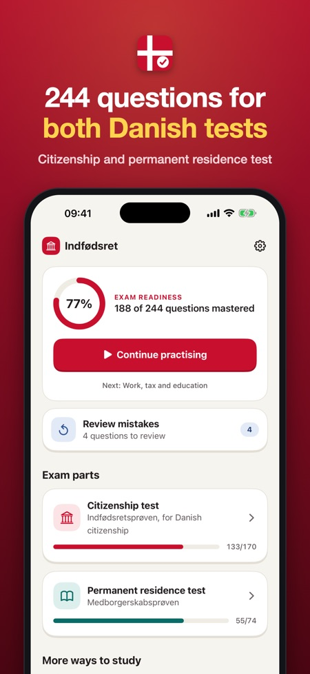
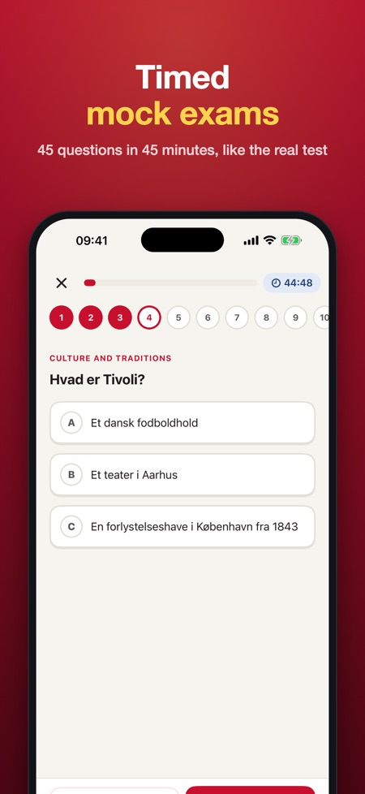
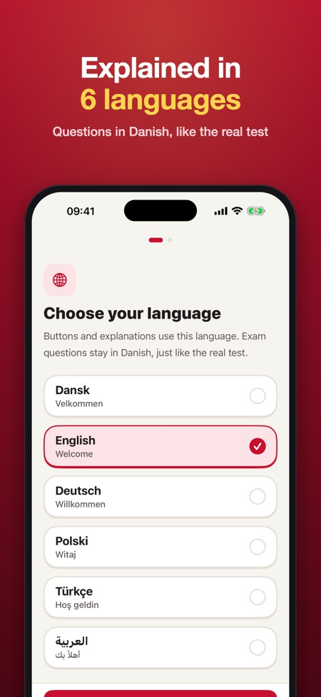

Indfødsret & residence test. 244 practice questions for both Danish tests. Questions in Danish, explanations in English. Timed mock exams with the 4-of-5 values rule.



Prepare for the Danish citizenship test (indfødsretsprøven) and the permanent residence test (medborgerskabsprøven) with 244 questions, explained in 6 languages. Pay once, no subscription.
QUESTIONS IN DANISH, EXPLANATIONS IN ENGLISH
Just like the real tests, every question is in Danish. After each answer you read why it is right or wrong in English (or Danish, German, Polish, Turkish or Arabic), so you learn the language and the facts at the same time.
WHAT'S INSIDE
• Citizenship test: 148 questions on Danish history, the constitution and democracy, welfare and society, culture and traditions, geography and Denmark in the world
• Citizenship test: 22 questions on Danish values
• Permanent residence test: 74 questions on everyday life, democracy, rights and duties, and work, tax and education
• Timed mock exams in the official formats: 45 questions in 45 minutes (pass with 36 correct and at least 4 of the 5 values questions) and 25 questions in 30 minutes (pass with 20 correct)
• Your mistakes come back until you get them right twice in a row
• After a citizenship mock exam you see whether you are above the safe line of 36 of 40 (the 5 current-affairs questions cannot be practised)
• Questions and answers read aloud in Danish
• Progress per topic
• A countdown to your test date and an optional daily reminder
FAIR PRICE
Try one topic and one mock exam in each test without a purchase. Unlock everything with one purchase. No subscription, no ads, no account. Works offline.
Note: 5 questions in the citizenship test are about current affairs and cannot be prepared. The app's mock exam uses syllabus questions instead.
This app is independent and not affiliated with SIRI, the Ministry of Higher Education and Science or the Danish government. All questions are our own, based on the public test topics. The mock exam is practice; the real test may differ.